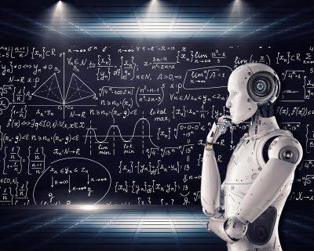

Штучний інтелект стрімко перетворюється з теоретичної концепції на фундаментальну основу сучасних технологічних систем. Сучасні алгоритми машинного навчання та глибоких нейромереж здатні обробляти колосальні масиви даних за лічені секунди, знаходячи закономірності, які недоступні людському сприйняттю.
Інтеграція інтелектуальних систем охоплює практично всі сфери нашого життя: від фінансового аналізу й медицини до автономного транспорту та побутових пристроїв. Це створює передумови для четвертої промислової революції.
На сьогоднішній день дослідники зосереджують зусилля не лише на розширенні обчислювальних потужностей, але й на створенні прозорих, етичних та безпечних моделей взаємодії людини з машиною.